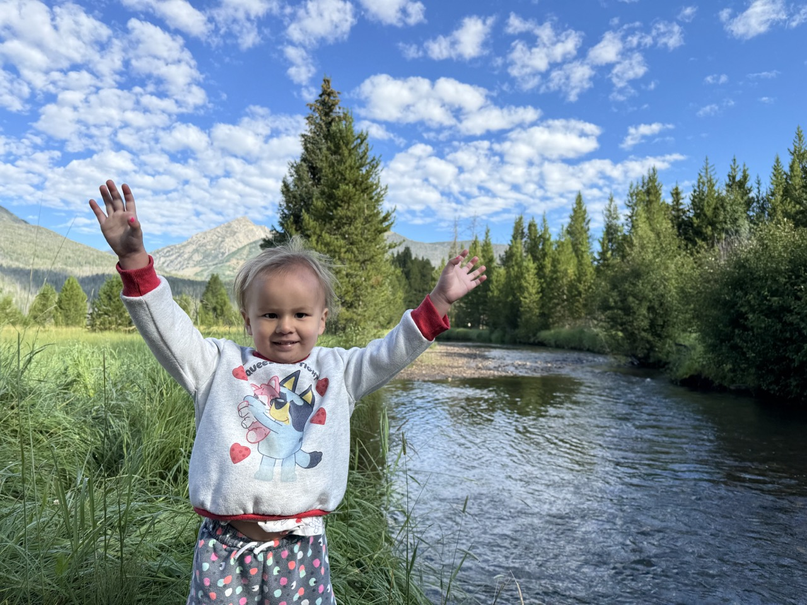
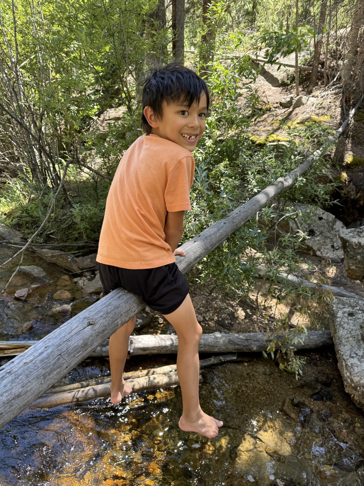

The trip started like many trips, taking the CTA to O'hare. However, even though we had plenty of time, the TSA delayed us to the point where we were the last to board. We were also relegated to the back of the plane and I got incredible motion sick. Luckily Frontier had the friendliest flight attendents who gave us free gummies AND free pringles.
We had rented a mini van cause we wanted to try a 3 rowed car. But Hertz had upgraded us the the Ford Expidition. What a beast!
After 2 hours of driving, we arrived in our Ski Lodge at Grandby. By that time, after 9 hours door to door travelling we were all very tired and passed out. It also didn't help that the Lodge was at 8200 ft and we were all irritated by the low oxygen. Day 1 started with us going straight into Rocky Mountain NP. The nearest hike from the our west entrance was Coyote Valley.
We had no idea how much the kids would love just finding a random stream and stomping around.
We continued driving up the mountain until the Alpine Visitor Center. The kids loved the little hike to the top. I carried Rozzy the whole way.
It was really windy at the top.
We did our last hike of the day around the green mountain trailhead. We barely go onto the trail before the kids started to complain. They did find a rockpile to climb on though.

We were all really tired the first 24 hours and so we just decided to cut the day short and run around our AirBNB. There were hummingbirds everywhere!
Day 2 start with us making a B-line to the Alpine Visitor Center because we were told the 5 miles east of the visitor center was the best part of the park. Also that the kids would love the Alluvial Fan. Dana is often reinvigorated by a giant cup of coffee and Duck with his hot cocoa. The tundra east of the visitor truly was a different world.
We made it to Alluvial Fan and the kids truely love stomping around in it. We were short on sunblock though and had to pull the kids away from it after they spent about an hour climbing up and down it. There are no shady places to sit!

Good bye Alluvial Fan!
Next we went to stomp around Chasm Falls which had much more shade, but of course, clumsy Verity falls in and gets REALLY wet.
On our way back out of the park, we saw a bunch of cars parked in the middle of the road and of course, there's a Moose near the road.
Caught duck saying: "Mooooooose"
End everyday with a giant Ice Cream cone; Grand is a cool tourist town. There was also some Country Music festival going on and Rozzy did not want to leave the party.
The next day, we decided to do a hike around Monarch Lake. It was the flat mountain hike. Verity of course, complained that the 4 mile loop was too long.
There was a little beach at the end of the hike that the kids loved. It was also at noon so it was really hot.
Ended the day at Allen Falls where the kids found some kids to play with. They couldn't be pulled away from it.
End every day with an ice cream cone.
The next day, we decided to do a 1 mile mountain hike that had an 800 ft incline.
Verity did not enjoy it, cause it was too high. She cried half the hike.
So we decided we couldn't do any hiking with Verity anymore and went to Hot Sulfer Springs to do some soaking. I don't do hot springs anymore so I decided to go for a run instead. I ran through the trash town that is Hot Sulfer Springs.
It was finally time to go home, we cleaned up and headed into Denver. Denver, as expected, is just another city and so we decided to kill time by going back into the mountains a little bit and stomped around Bear Creek.
The airline did the scary thing and moved our flight to land in Chicago at 11:30. I was stressed that the kids wouldn't be able to sleep through it, but they did great. Finally got home at 12:30 and had to goto work the next day.